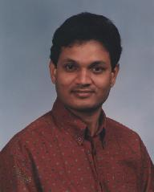

WEEKEND THOUGHTS # 36

Hello Everyone,
This week's Thoughts are from Anirudh Sahoo, a budding Computer Scientist from Texas. In his article Anirudh describes his experiences with different kinds of Oriya people he has met in the United States. However, if you read through his article you will notice that his classification, is equally applicable to any group of Indians. The article is powerful since it attempts to classify people into groups based on their attitudes and behavior. Anirudh, is not trying to judge anyone, he just presents his views of people he has met. I personally feel he is very correct and we meet these "categories" all the time. We often wish that we did not meet people who fall into some of these categories, but they are there everywhere, unfortunately.
Enjoy the article from Anirudh.
P.S. Unfortunately, due to work load at the end of the year we could not get any reviews for the article.
While I have your attention: In the past the Editorial committee has been sending our random requests to readers of this column to contribute articles for the column. Thanks to your kind help we have been able to present some wonderful articles in this forum and we have some very good articles scheduled for the upcoming weeks. We require more people to come ahead and volunteer for writing some thoughts for the column. This will help us keep this venture successful. If any of you would like to submit your thoughts (poems, articles, nostalgia, etc.) for the column please come forward and contact one of us.Hopefully, we will get some very good contributions for many more Weekend Thoughts. Please send us Email and we will schedule you for a week. Hoping to hear from a lot of you. Thank you.
Enjoy this week's article from Anirudh Sahoo of Texas.
Social :
Self : Anirudh Sahoo
Married to : Archana Sahu
Academic and Professional:
HSC - Unit-1 Govt. Boys' High, BBSR - ('75 - '81)
I.Sc. - BJB College, BBSR ('81 - '83)
B.Sc.(Engg.) Elect. Engg. - REC, Rourkela ('83 - '87)
Production Engineer - L&T(Const.), Madras And Unitel Comm.
('87 - '88)
M.S. Comp. Sc. - Univ. of Southwestern Louisiana, Lafayette, LA -
('88 - '90)
Software Analyst - Intergraph Corp., Huntsville, AL - ('91 - '95)
Ph.D. student Comp. Sc. - Texas A & M Univ., College Station, TX -
('95 - present)
MY EXPERIENCE WITH ORIYA PEOPLE
In my article I will write about different Oriya people that I have met in USA and their attitude towards different aspects of life. I would like to discuss how we can change our attitude to help people back home. I will try to keep it short.
In my seven years of stay in USA, I have met quite a lot of different varieties of Oriya people. When I sit down and analyze some of the characters that they represent, I get overwhelmed by the variety of the characters. I will try to enumerate some distinct charaters, I understand that a person will not strictly fall into one of these categories, but they can be taken as some combination of these.
1. There are these kinds that I do not personally like. These are the people who would do anything and everything to have their names spread to different corners of Orissa and of USA. They have a lot of money to spend, but they would not like to spend in such a way that needy and poor in Orissa will be benefitted, rather they would spend it to have something in USA, so that people in Orissa will know that such and such in USA have set up this institution and he is a great guy. Tagged on to these rich people are some, who would say yes to anything they propose, because they know that when they do this, their name and picture will appear in local newspaper in Orissa and they can become famous too without spending a penny. I wish, the same money could be spent for doing some good project for so many genuine problems that we have back in Orissa. One shouldn't work for name and fame : it will come automatically if you are genuinely concerned about people and doing something to help people from your heart. The money involved here is serious money in the range of hundreds or thousands of dollars.
2. Then there are these who do whatever little they can in their capacity and do not care for publicity. And people do not know about them. I personally know a few people who fall into this category. They are really great people. They are also not rich, but they are genuinely concerned about people in Orissa and they talk with firmness and with good understanding of various problems. They talk upfront and stick onto their doctrine, no matter what. I have a lot of respect for these great people. Keep it up.
3. Then there are these who would talk a lot about suffering and lawlessness and corruption in Orissa and who would have a very pessimistic idea about the progress of the state and would feel good that they are here, far away from that. But they would love to go to Orissa as often as they could and enjoy various things there, come back and again give negative remarks about India/Orissa.
4. Then comes the kind who are really sociable and make you feel at home. They are very affectionate, would help you to the maximum extent and you can call them in any time and expect to be greeted. It is very hard to find a lot of people like this. But I know quite a few Oriyas who are like this.
5. There are some of these kinds who are hypocrats, they preach something and they do something else. For example, I know quite a few personally, who would give a very eloquent speech against dowry, but have asked for dowry while getting married. In some cases, the parents of the prospective candidates have asked for dowry, and our USA-educated-professional has not opened his mouth for it. I believe it is a crime, not to speak against somebody who is committing it, may it be our own parent.
I can go on and on..
The gist of my article, is that we should be genuinely concerned about our state, country or society, not just to show off. That is what is lacking in our politicians back home. They just deliver speeches, but what they say is not from the bottom of their heart. The moral is very low, because people do not get the basic necessities easily. Once that is done, the moral can be boosted. Also India lacks charity from people with money. The rich Indians do not contribute for charity in various programs, whereas a lot of development in USA is done through charity.
On a side note, I think it will be a good idea if some of the weekend thoughts can be published in local newspaper in Orissa, so that people in Orissa become aware of the good things that happen in USA and their shortcomings and the concerns of we NROs.
Personally, I have not contributed financially to any of the organizations that are involved in improving condition in Orissa and elsewhere in India. I think everyone, including me, should do it and also take interest in those things.
The author of this week's WT article was trying to hammer in some interesting points but I feel he carried himself in the wrong direction by diverting from the original purpose of the article which was also unclear.
I was definitely intrigued by some points that the author was trying to get across. He first categorizes Oriyas according to whom he feels he has met. He then tries to pass off the problems of Orissa by laying the blame squarely on the politicians. The author then says briefly that the rich Indians don't really care according to him because they are well off. He makes some very good points such as publishing the WT articles in India, getting involved with some cause in Orissa, and thinking of our motherland constantly. Kudos to the author for that!
The author's arguments made me sit back and give an honest thought to whether we do care about our motherland and whether we honestly make an effort to combat the issues that are troubling Orissa. I agree with the author that we should be genuinely concerned but I don't believe that slinging mud at anyone (politicians included!) carries any legitimacy in trying solve the problems in Orissa. What needs to happen is as a society we need to look deep into ourselves and see whether or not our morals are being justified by letting the problems happen in Orissa. Society is what moves mountains not just a few petty politicians or rich people. These people may have only exacerbated growing problems but eliminating or categorizing them is not a solution. As individuals we need to go deep inside and do a reality check on how well we can perceive problems. If we believe that we move mountains then we really will be able to do it as a society. The author is absolutely right. We have to get together with others to solve the problems in Orissa. If not with others, go to Orissa and ask what is needed and there are many honest and trustworthy people (in Orissa and the USA) who will direct you to the problems areas that need help.
Thanks,
Ashish
moha0018@gold.tc.umn.edu
Your comments are always welcome...

 Anirudh Sahoo
Anirudh Sahoo


![[IMAGE]](mult.gif)
![[IMAGE]](jag.gif)
Ride back to Home Page...
![[IMAGE]](rath.gif)